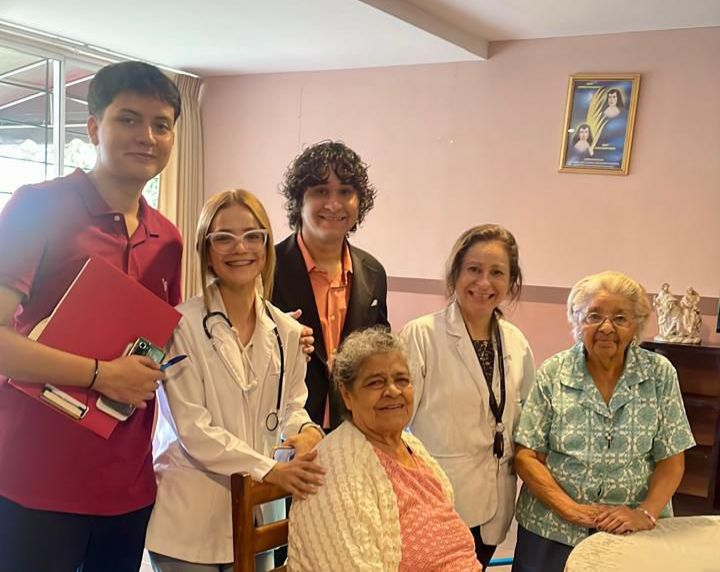
Primera actividad: Visita médica al Hogar de Ancianas Nuestra Señora Reina de la Paz
Se llevó a cabo nuestra primera actividad institucional, en la cual visitamos el Hogar de Ancianas Nuestra Señora Reina de la Paz, desarrollando una jornada centrada en el cuidado integral de sus residentes. Con un equipo inicial de seis personas, logramos articular nuestra primera visita, marcando el inicio real de nuestras actividades.
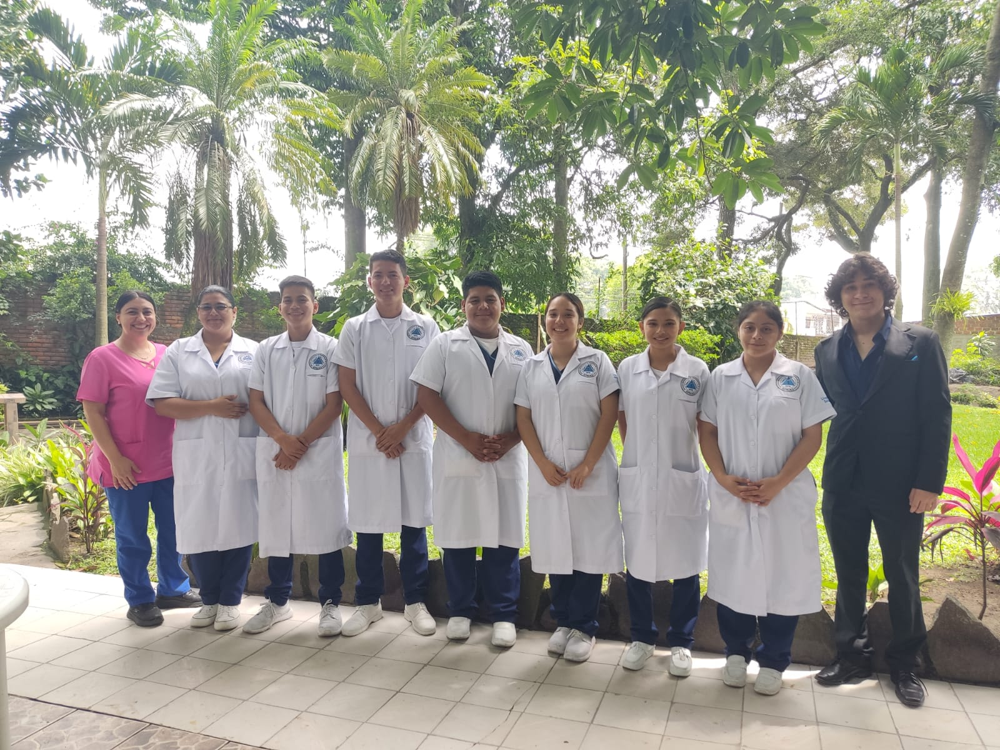
Taller de Capacitación sobre "Toma de Signos Vitales" a estudiantes de IEPROES y entrega de Insumos al Hogar Nuestra Señora Reina de la Paz
Se realizó una visita al Hogar de Ancianas Nuestra Señora Reina de la Paz. En esta ocasión, se les brindó a los estudiantes de IEPROES una capacitación sobre la toma de signos vitales, aprendiendo junto con las residentes del hogar la forma correcta de hacerlo, adicionalmente se hizo la entrega de insumos al Hogar por su apertura y muestra de apoyo.
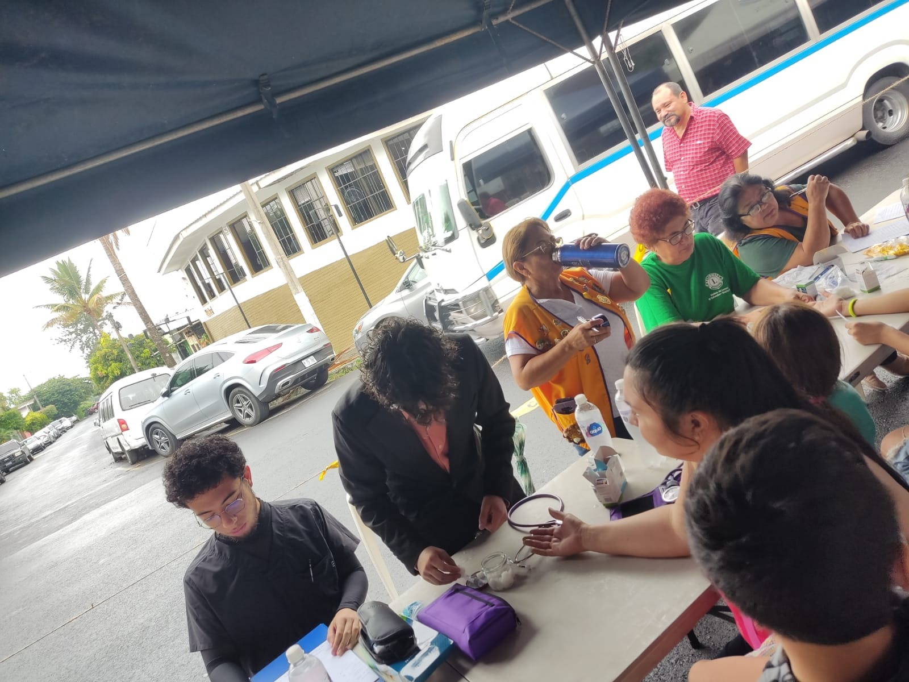
Brigada multidisciplinaria en Santa Tecla — con Club de Leones 50 Nueva San Salvador
Participamos en la brigada multidisciplinaria organizada por el Club de Leones 50 Nueva San Salvador en Santa Tecla, desarrollando jornadas de tamizaje y atención comunitaria para los asistentes. Gracias al apoyo del Club de Leones, también se realizó la entrega de lentes a personas de la comunidad, contribuyendo a mejorar su bienestar y calidad de vida.
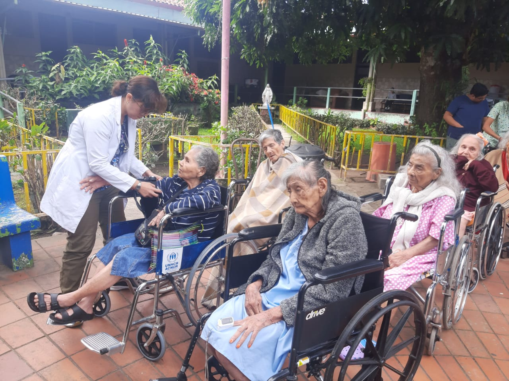
Visita médica al Hogar de Ancianas San Vicente de Paul — con Estudiantes de la Policía Nacional Civil
Visitamos el Hogar de Ancianas San Vicente de Paúl, gracias a la invitación de los estudiantes de la Policía Nacional Civil. A través de un abordaje médico integral y un acompañamiento cercano, se logró evaluar el estado de salud actual de las pacientes, identificando sus principales necesidades y brindando atención con enfoque humano y solidario.
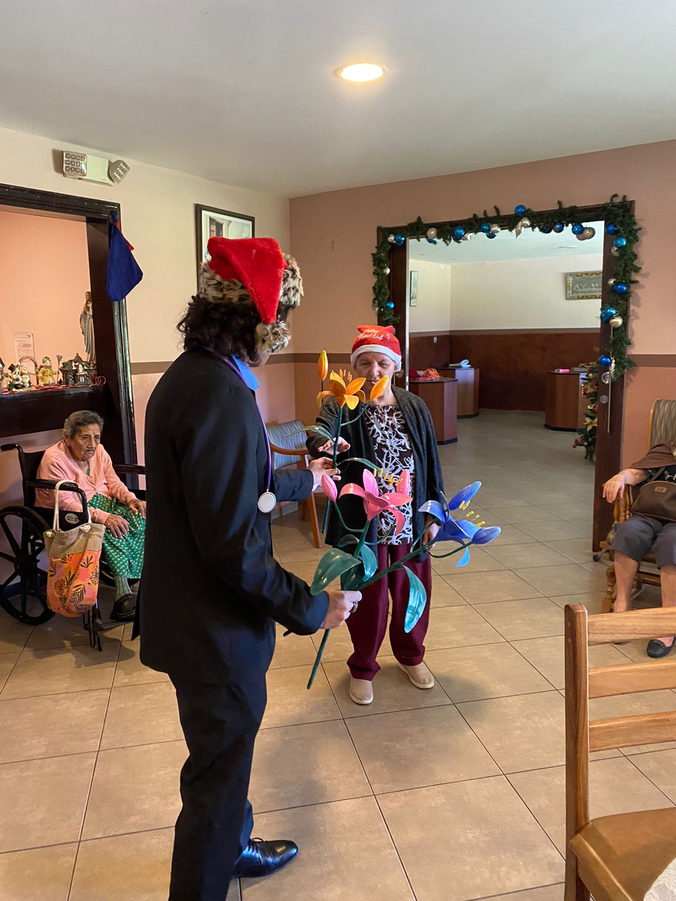
Visita médica navideña al Hogar de Ancianas Nuestra Señora Reina de la Paz
En vísperas de la Navidad, visitamos el Hogar de Ancianas San Vicente de Paúl como parte de nuestro compromiso con el bienestar y acompañamiento de este importante sector de la sociedad. Durante la jornada, se realizó la entrega de insumos y regalos para todas las residentes, compartiendo un espacio de cercanía, solidaridad y atención humana. Además, se llevó a cabo un tamizaje de salud como parte del seguimiento de los distintos cuadros médicos presentes en las pacientes.
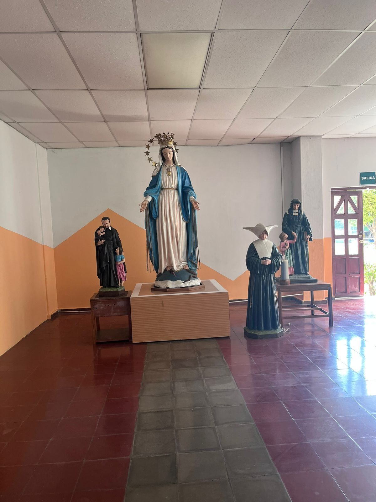
Charlas y abordaje psicológico en el Hogar del Niño San Vicente de Paul
A través de charlas sobre reconocimiento emocional, acercamos a los niños del Hogar del Niño San Vicente de Paúl a la importancia de la salud mental y el manejo de sus emociones. Una intervención que dejó huella en cada participante.
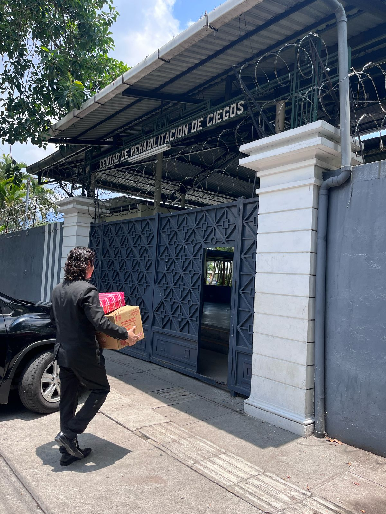
Muestra de Cariño al Centro Escolar para Ciegos V. De Dueñas
Se realizó una visita al Centro Escolar para Ciegos, donde miembros de la Sociedad de Médicos del Mañana compartieron una jornada de convivencia y cercanía con los estudiantes del centro. Como muestra de apoyo y cariño, se hizo entrega de pan dulce para los niños y jóvenes, promoviendo un espacio de solidaridad y acompañamiento humano.

Brigada médica y psicosocial en comunidad Tutunichapa I — con ACNUR
Se brindó atención médica general a la comunidad Tutunichapa I, en San Salvador, mediante un equipo multidisciplinario conformado por médicos y personal de enfermería, con el objetivo de acercar servicios de salud a una de las comunidades más vulnerables del país. Como parte de la jornada, también se habilitó un espacio de atención psicológica, promoviendo un enfoque integral orientado al bienestar físico y mental de la población. La actividad se desarrolló como un proyecto piloto en alianza estratégica con ACNUR, fortaleciendo el trabajo comunitario y la atención humanitaria en el territorio.
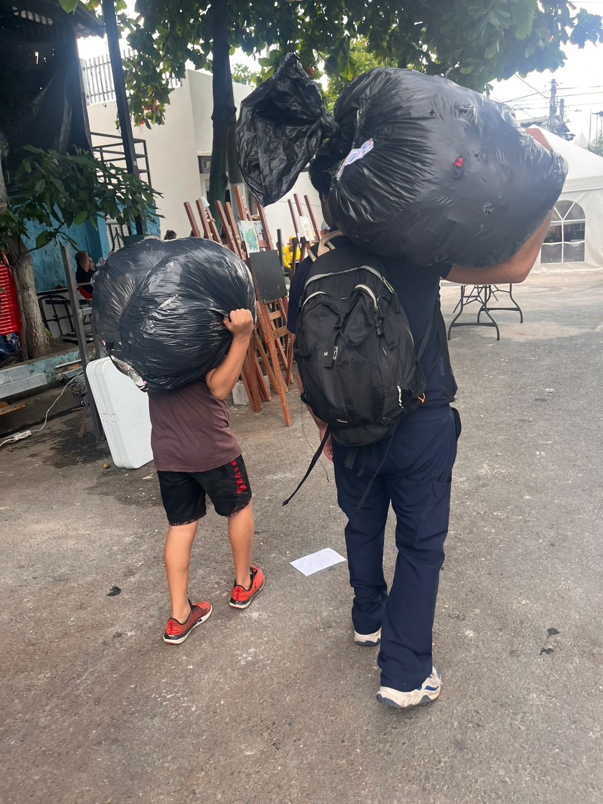
Visita a la comunidad Tutunichapa I para entrega de insumos.
A raíz de las lluvias ocurridas durante el periodo de agosto de 2025, se realizó una visita de emergencia a la comunidad Tutunichapa I, en San Salvador, con el objetivo de brindar apoyo inmediato a las familias afectadas. Gracias a la coordinación de ACNUR, se llevó a cabo la entrega de insumos para los habitantes de la comunidad.

Primera Capacitación para los voluntarios de Cruz Roja Juventud
Se brindó una capacitación sobre "Higiene de Manos en la Atención Prehospitalaria" dirigida a voluntarios de Cruz Roja Juventud, con el objetivo de fortalecer las buenas prácticas en el abordaje de emergencias. Durante la jornada, los participantes aprendieron la técnica correcta del lavado de manos, así como la importancia de esta medida en la prevención de infecciones y en la protección tanto del paciente como del personal de atención prehospitalaria.
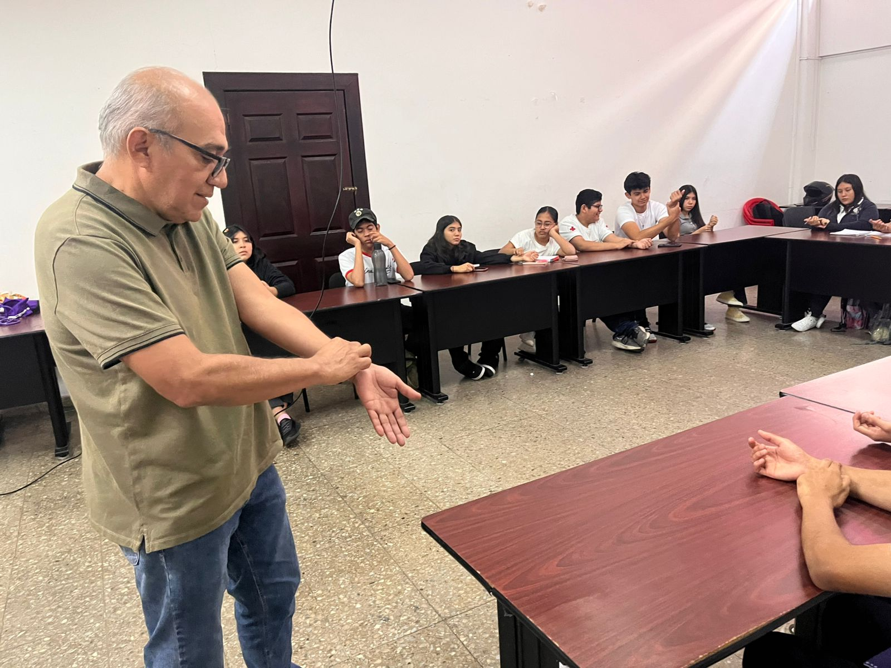
Taller de Toma de Signos Vitales para los voluntarios de Cruz Roja Juventud
Se desarrolló un taller de “Toma de Signos Vitales” dirigido a voluntarios de Cruz Roja Juventud, orientado al fortalecimiento de conocimientos básicos en la evaluación inicial de pacientes durante situaciones de emergencia. Durante la actividad, los participantes aprendieron a realizar correctamente la medición de presión arterial, frecuencia cardíaca, frecuencia respiratoria y temperatura, además de comprender la importancia de estos parámetros en la valoración clínica y el abordaje prehospitalario.
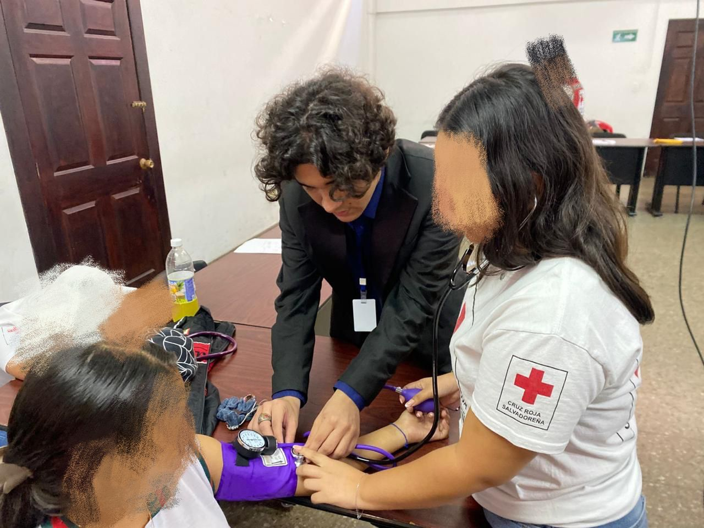
Taller de Toma de Presión Arterial para los voluntarios de Cruz Roja Juventud
Se desarrolló un taller de “Toma de Presión Arterial” dirigido a voluntarios de Cruz Roja Juventud, enfocado en fortalecer habilidades básicas para la evaluación inicial de pacientes en contextos de atención prehospitalaria. Durante la jornada, los participantes aprendieron la técnica correcta para la medición de la presión arterial, el uso adecuado del equipo y la importancia de este signo vital en la identificación temprana de posibles alteraciones en el estado de salud de los pacientes.

Visita psicológica y recreativa al Hogar del Niño San Vicente de Paul
A través de charlas educativas y actividades lúdicas, se promovió el fortalecimiento de la salud mental y el bienestar emocional de los niños, generando espacios de aprendizaje, convivencia y expresión. Como parte de la jornada, y en coordinación con Cruz Roja Juventud, también se realizó la entrega de juguetes, compartiendo momentos de alegría y cercanía con los participantes.
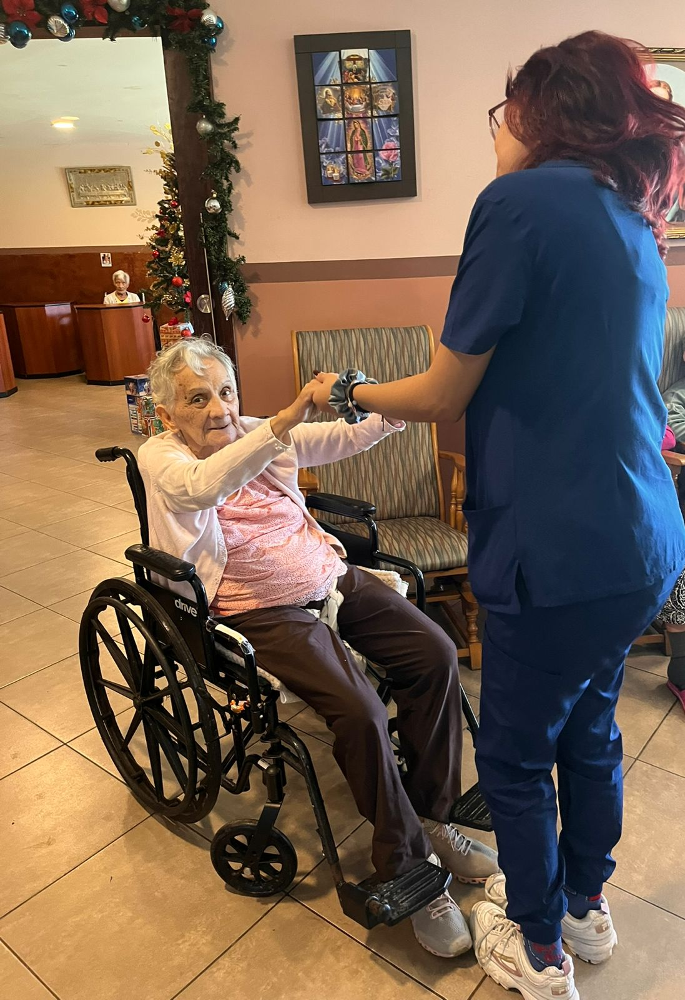
Visita médica navideña al Hogar de Ancianas Nuestra Señora Reina de la Paz
Por segundo año consecutivo, realizamos una visita al Hogar de Ancianas San Vicente de Paúl en vísperas de la Navidad, reafirmando nuestro compromiso con el acompañamiento y bienestar de las residentes. Durante la jornada, se entregaron insumos para las residentes, compartiendo un espacio de convivencia, solidaridad y atención cercana. Además, se desarrolló un tamizaje de salud como parte del seguimiento de los distintos cuadros médicos presentes en las residentes, fortaleciendo la vigilancia y el cuidado integral de su estado de salud.
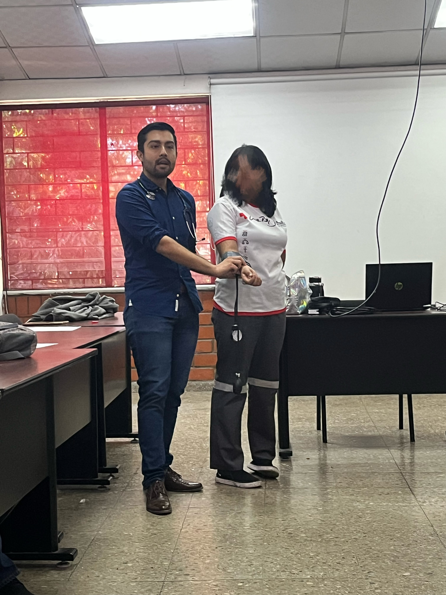
Taller de Toma de Signos Vitales para los voluntarios de Cruz Roja Juventud
Se desarrolló un taller de “Toma de Signos Vitales ” dirigido a voluntarios de Cruz Roja Juventud, con el objetivo de fortalecer conocimientos básicos para la atención inicial de pacientes en contextos prehospitalarios. Durante la jornada, los participantes aprendieron la correcta medición de signos vitales, incluyendo presión arterial, frecuencia cardíaca y frecuencia respiratoria.
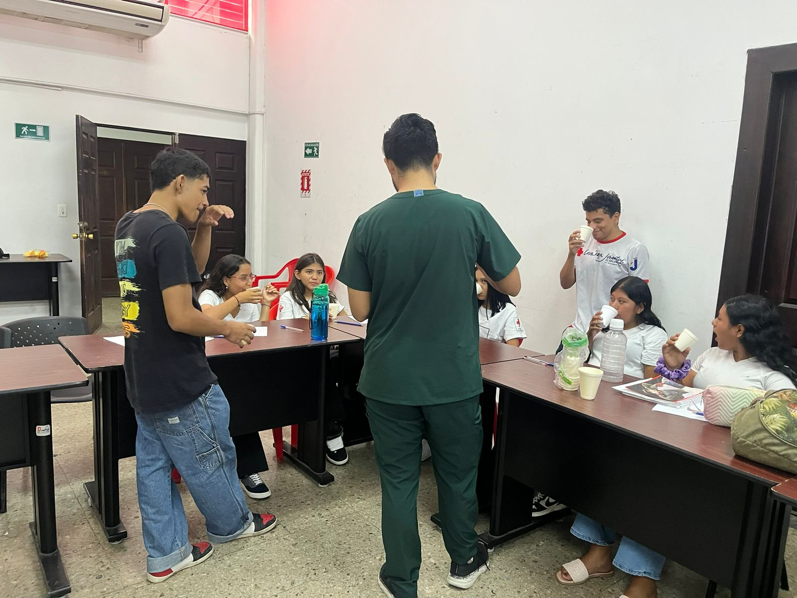
Taller de Deshidratación y Manejo de Enfermedades Transmisibles para los voluntarios de Cruz Roja Juventud
Se desarrolló un taller sobre “Deshidratación y Manejo de Enfermedades Transmisibles” dirigido a voluntarios de Cruz Roja Juventud, con el objetivo de fortalecer conocimientos básicos para la atención y prevención de enfermedades en contextos comunitarios y prehospitalarios. Durante la jornada, los participantes aprendieron a identificar signos y síntomas de deshidratación, así como medidas iniciales de manejo y prevención. Además, se abordaron aspectos fundamentales sobre enfermedades transmisibles, incluyendo mecanismos de contagio, medidas de bioseguridad y acciones preventivas orientadas a reducir riesgos y promover una atención más segura y efectiva en situaciones de emergencia y trabajo comunitario.
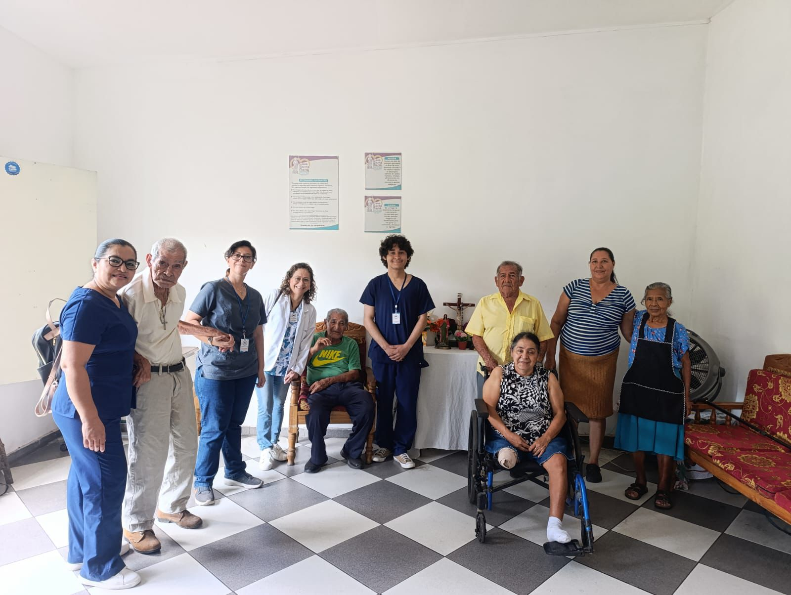
Visita médica a Casa Santa Marta en Tonacatepeque
Visitamos la Casa Santa Marta, en Tonacatepeque, una residencia de adultos mayores que nos recibió con gran calidez y cariño. Durante la jornada, se brindaron consultas médicas gratuitas a los residentes, permitiendo evaluar su estado de salud y dar seguimiento a distintas necesidades médicas presentes en la institución. Además, se realizó la entrega de diversos insumos como parte de nuestro compromiso con el apoyo integral y el acompañamiento a hogares que trabajan diariamente por el bienestar y cuidado de los adultos mayores.
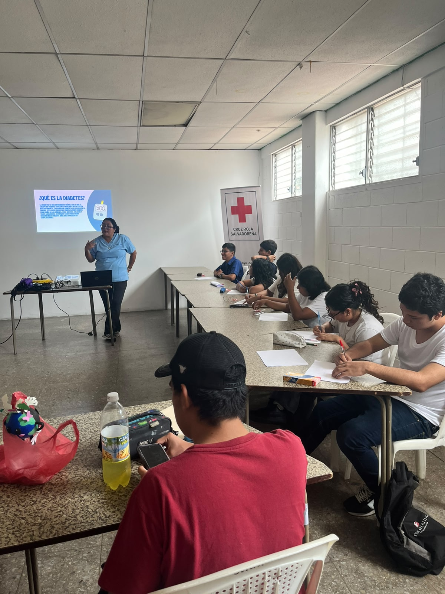
Taller de Prevención y control básico de hipertensión y diabetes para los voluntarios de Cruz Roja Juventud
Se desarrolló un taller sobre “Prevención y Control Básico de Hipertensión y Diabetes” dirigido a voluntarios de Cruz Roja Juventud, con el objetivo de fortalecer conocimientos básicos para la identificación, prevención y control de estas enfermedades crónicas en contextos comunitarios y de promoción de la salud. Durante la jornada, los participantes aprendieron a reconocer factores de riesgo, signos de alerta y medidas generales para el manejo adecuado de ambas condiciones. Además, se abordaron aspectos fundamentales sobre hipertensión arterial y diabetes mellitus, incluyendo hábitos saludables, importancia del control periódico, adherencia al tratamiento y acciones preventivas orientadas a reducir complicaciones y promover una mejor calidad de vida en las comunidades donde desarrollan sus labores de servicio y apoyo.
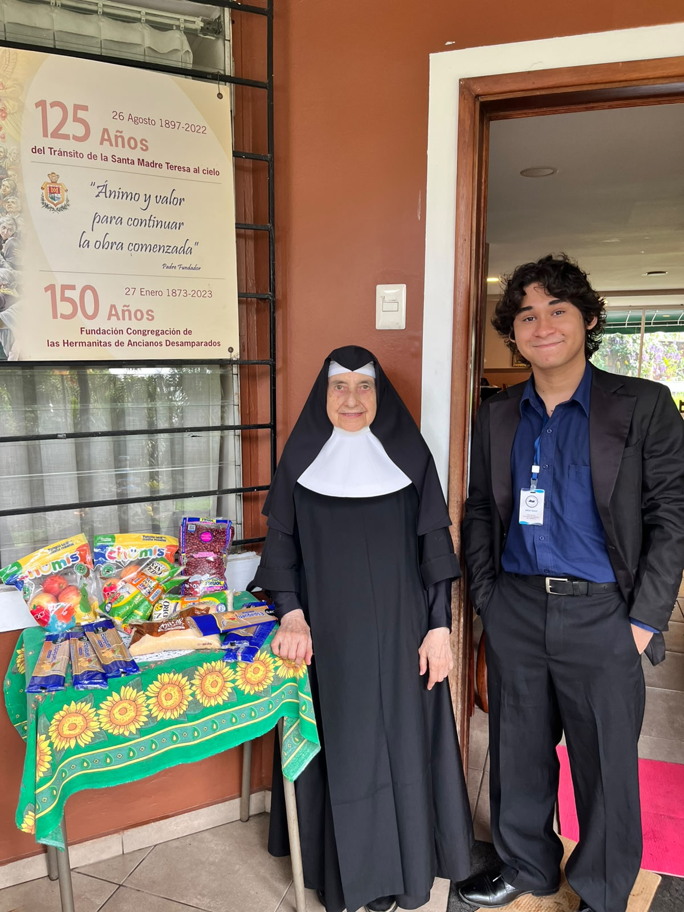
Visita médica al Hogar de Ancianas Nuestra Señora Reina de la Paz
Visitamos el Hogar de Ancianas Nuestra Señora Reina de la Paz, donde desarrollamos una jornada de atención médica dirigida a las residentes de la institución. Durante la actividad, se brindaron consultas de medicina general, controles básicos de salud, tamizajes y recomendaciones orientadas a la prevención, detección temprana y seguimiento de diversas condiciones médicas. Además, se realizó la entrega de distintos insumos alimenticios como muestra de apoyo y solidaridad con el hogar, contribuyendo al bienestar de las residentes y fortaleciendo nuestro compromiso con el acompañamiento integral a instituciones que trabajan diariamente por el cuidado y la atención de las personas adultas mayores.
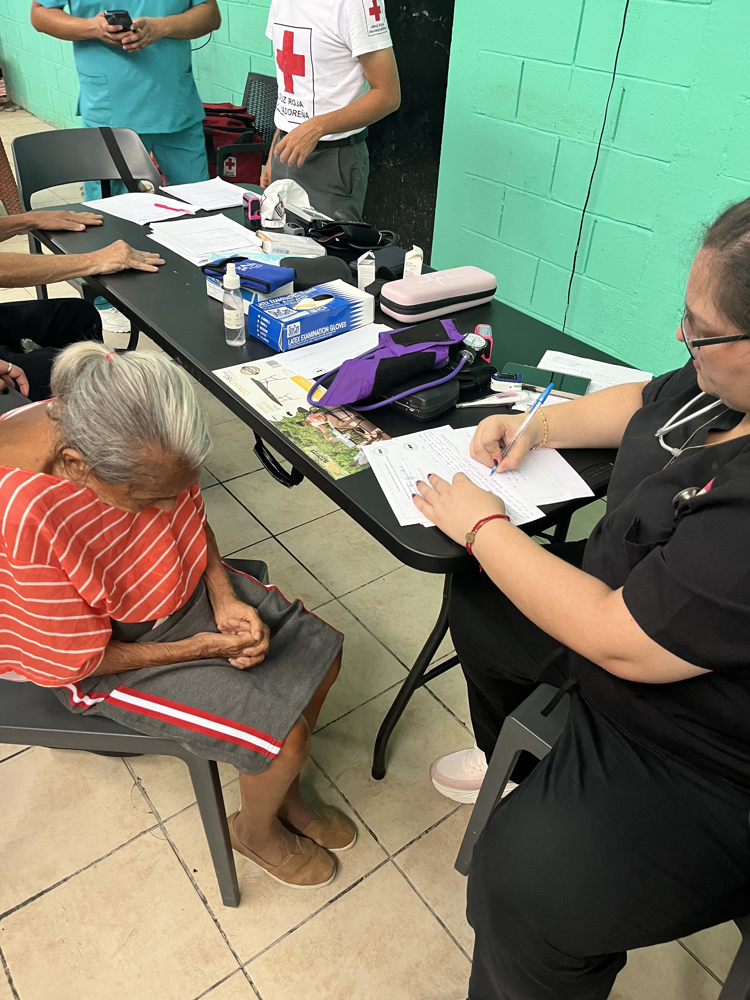
Visita médica al Hogar Rotario para Adultos Mayores "Giuseppe Angelucci" en Zaragoza
Visitamos el Hogar Rotario para Adultos Mayores "Giuseppe Angelucci", donde desarrollamos una jornada de atención médica y convivencia en beneficio de sus residentes. Durante la actividad, se brindaron consultas médicas personalizadas que incluyeron la toma de presión arterial, medición de glucosa, cálculo del índice de masa corporal (IMC), revisión y actualización de los expedientes clínicos, además de recomendaciones individualizadas y la emisión de recetas médicas cuando fue necesario. Asimismo, compartimos un espacio recreativo mediante juegos lúdicos, partidas de damas chinas y momentos de baile, promoviendo la convivencia y el bienestar emocional de los adultos mayores. Esta actividad fue posible gracias al trabajo conjunto con Cruz Roja Juventud y las Damas Voluntarias, reafirmando nuestro compromiso con una atención integral y humanizada.

Visita médica al Hogar de Ancianos Ramón Meléndez
Visitamos el Hogar de Ancianos Ramón Meléndez, donde desarrollamos una jornada de atención médica dirigida a todos sus residentes. Durante la actividad, se brindaron consultas médicas personalizadas que incluyeron la toma de presión arterial, medición de glucosa, cálculo del índice de masa corporal (IMC), revisión y actualización de los expedientes clínicos, además de recomendaciones individualizadas y la emisión de recetas médicas cuando fue necesario. Esta jornada permitió contribuir al seguimiento oportuno del estado de salud de los adultos mayores, reafirmando nuestro compromiso con la promoción de la salud y el cuidado integral de esta población.
No hay actividades con esos filtros
Intenta con otra combinación de año o programa.